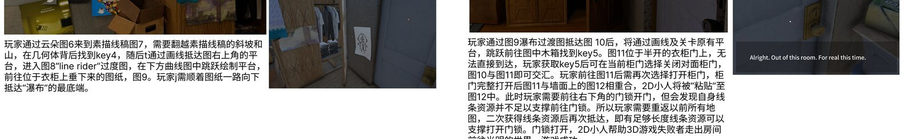

DEVELOPMENT
开发迭代 · 四版核心机制
VERSION 01
核心概念验证
确立"画线即消耗身体"的核心机制，验证最基础的跳跃平台玩法。
VERSION 02
钥匙与资源循环
加入隐藏钥匙与线条长度资源的增长循环，形成"收集 → 变长 → 走得更远"的正反馈。
VERSION 03
云朵 → 线稿 → 瀑布
玩家从云朵图进入素描线稿场景，翻越斜坡与山，在几何体背后找到 key4；画线抵达右上角平台后进入 "Line Rider" 过渡图，在曲线图中跳跃绘制平台，顺着衣柜垂下的图纸一路向下，抵达"瀑布"最底端。
VERSION 04
柜门、海报与最后一道锁
柜门开合之间完成 2D 与 3D 场景的"粘贴"切换；最后的门锁前线条不足，玩家需重返旧地图积累资源。门锁打开，2D 小人帮助三维世界的游戏失败者走出房间，前往光明的世界——游戏成功。


▲ Figma 设计展板 · 机制版本 03 / 04 的关卡说明与试试图示